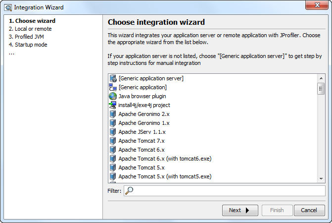

Remote Profiling - Application Servers and Standalone Applications |
Remote profiling means that the profiling agent is running on the remote machine and the JProfiler GUI is running on your local machine. Profiling agent and JProfiler GUI communicate with each other through a socket. This situation is fundamentally the same as running a session that is launcher on the local machine, just that the socket communication socket connects between different machines. The main difference for you is that for launched sessions you don't have to worry about the location of native libraries and that the startup sequence can be managed by JProfiler.
To avoid running an integration wizard or modifying the VM parameters of the profiled application, just extract the JProfiler archive from the download page on the remote machine. You do not have to enter a license key there. Run the bin/jpenable command line application on the remote machine. You will be able to select a JVM and load the profiling agent into it so that is listens on a specific profiling port. In your local JProfiler GUI, you can then connect with an "Attach to profiled JVM (local or remote)" session.
This only works with a Java VM of version 1.6 or higher and has the drawback that array allocations are not recorded, i.e. stack trace information for array allocations is not available. Also, if you're profiling regularly, it might be more convenient to prepare a permanent setup that does not require you to run the jpenable executable every time.
All integration wizards in JProfiler can help you with setting up remote profiling. After choosing the integration type or application server, the wizard asks you where the profiled application is located. If you choose the remote option, there will be additional questions regarding the remote machine.

When the remote integration wizard asks you for startup scripts or other files of the application server on the remote machine it brings up a standard file selector. If the file system of the remote machine is accessible as a network drive or mounted into your file system, you can select those files and JProfiler will directly write modified files to the right location.
If you do not have direct access to the file system of the remote machine, you have two options: You can use the console integration wizard by executing bin/jpintegrate on the remote machine. Alternatively, you can copy the required files to the local machine and use the "remote" option in the integration wizard. However, you must then transfer the modified or new files back to the remote machine after the integration wizard has completed.
Although the integration wizards in JProfiler give you all required information, it's always a good idea to have a little more inside knowledge about the mechanics and the requirements of remote profiling. When trouble-shooting a failed integration, you should check that the requirements below are fulfilled correctly.
The following requirements have to be satisfied for remote profiling:
JProfiler has to be installed on the local machine and on the remote machine. If the remote machine is a Unix machine, you might not be able to run the GUI installer of JProfiler. In this case, please use the .tar.gz archive to install JProfiler.
Unless you specified the "nowait" parameter on the command line together with a "config" argument, (only necessary for pre 1.6 JVMs), you do not have to enter a license key on the remote machine, the license key is always provided by the JProfiler GUI. Because of that, it is sufficient to unpack JProfiler to any directory where you have write permission.
On the remote machine, you have to add a number of VM parameters to the java invocation
of your application server or your standalone application. The fundamental VM parameters
are -Xrunjprofiler for Java <=1.4.2 (JVMPI) and
-agentpath:[path to jprofilerti library]
for Java >=1.5.0 (JVMTI), which tell the JVM to load the native profiling agent.
The help page on remote sessions
in the reference section tells you the corresponding path to the jprofilerti library for all platforms.
Depending on your JVM and your platform, you have to add further VM parameters to your java invocation. The remote session invocation table in the reference section gives you the exact parameter sequence for your configuration.
This is all that is required to profile a modern JVM (Java 1.5 and later).
-Xbootclasspath/a:{path to agent.jar} which adds required Java classes
to the bootclasspath. agent.jar is located in the bin
directory of your JProfiler installation. In addition, the native library path on the
remote machine must contain the platform-specific directory in
the bin directory of the JProfiler installation. The "native library path" is
defined by a different environment variable on each platform. For example, on Windows, it
is simply the PATH environment variable, on Linux it is LD_LIBRARY_PATH.
The help page on remote sessions
in the reference section tells you the corresponding environment variables for all platforms.
If you run the integration wizard for a local application server, JProfiler will be able to start it and connect to it. JProfiler has no way to start the application server if it is located on a remote machine. For remote applications and application servers, you have to perform two actions to start the profiling session:
With Java 1.5.0 and earlier, changing profiling settings at runtime is not possible. In the case where the application does not wait for a connection from the JProfiler GUI, the profiling agent loads the profiling configuration from the config.xml file you have copied to the server as instructed by the integration wizard.
When things don't work out as expected, please have a look at the terminal output of the profiled application or application server on the remote machine. For application servers, the stderr stream might be written to a log file. Depending on the content of the stderr output, the search for the problem takes different directions:
The communication port is defined as a parameter to the profiling agent VM parameter.
To define a communication port of 25000, please change this VM parameter
to -Xrunjprofiler:port=25000 for Java <=1.4.2 (JVMPI) or
-agentpath:[path to jprofilerti library]=port=25000 for Java >=1.5.0 (JVMTI).
Also, please make sure that the same port is configured in the "Attach to profiled JVM" session in the
JProfiler GUI on your local machine. Please note that this port has nothing to do with
HTTP or other standard port numbers and must not be the same as any port that's already
in use on the remote machine.
For Java 1.4.2 and earlier, if stderr contains an error message about not being able to load native libraries, the native library path is not configured correctly. Please see the requirements above on how to configure the native library directory. If the problem persist, it might be a problem with dependencies. On Unix platforms, you can execute
LD_LIBRARY_PATH=.:$LD_LIBRARY_PATH ldd libjprofiler.so
in the native library directory to get information about missing dependencies. On
Microsoft Windows, you can download the dependency walker from
http://www.dependencywalker.com
to analyze the problem.
Please note that it is not a good
idea to define the VM parameter java.library.path. If you absolutely have to do that,
please make sure that the definition contains the appropriate native library directory
for JProfiler.
For Java 1.4.2 and earlier,
if stderr contains a NoClassDefFoundError for a class in the
com.jprofiler.agent package, the bootclasspath has not been
configured correctly. Please see the requirements above on how to configure
the bootclasspath. Putting agent.jar in the regular
classpath does not help and may actually be harmful.
NoClassDefFoundErrors also occur if there is a classloader problem.
The most common case is if the profiled application is an
OSGi application. In some OSGi applications, you have to
add the JProfiler agent package com.jprofiler.agent to the standard
variable org.osgi.framework.bootdelegation in the OSGi configuration file. For
eclipse Equinox, this is the
config.ini file, for Apache Felix,
this is the config.properties file.
If there are no lines in stderr that are prefixed with
JProfiler> and your application or application server starts up normally,
the -Xrunjprofiler for Java <=1.4.2 (JVMPI) or -agentpath:[path to jprofilerti library]
for Java >=1.5.0 (JVMTI) VM parameter have not been included in the
java call. Please find out which java call in your startup script is actually executed
and add the VM parameters there.